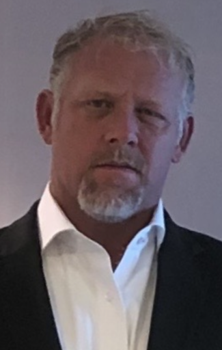
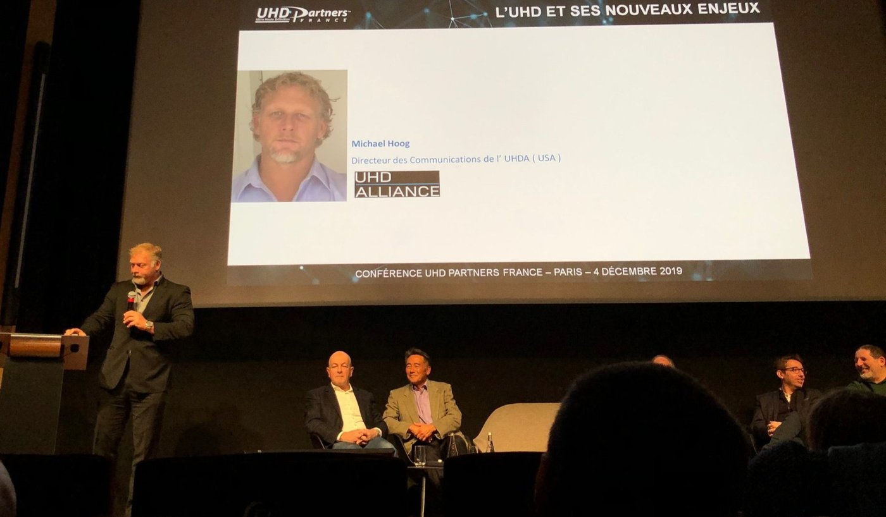
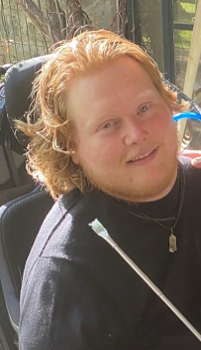

HoogComm's leadership team brings together deep experience in strategic communications, entertainment technology, public policy, and disability advocacy, providing clients with seasoned guidance in environments where experience matters.
Michael Hoog is a nationally recognized communications and brand strategy executive with more than 25 years of experience advising Fortune 1000 technology, entertainment, and consumer electronics organizations. Trained as an attorney and a former member of the public policy and corporate practice groups at Patton Boggs, he brings to every engagement a disciplined understanding of regulatory frameworks, legal exposure, and governance risk that most communications advisors simply don't have. As Founder and President of HoogComm, he provides board-level counsel on corporate reputation, crisis management, public policy, and long-term brand positioning.
Throughout his career, Michael has led B2B and B2C communications initiatives that have shaped entire industries. He has represented more than 100 companies through alliances including the Blu-ray Disc Association and the UHD Alliance, aligning competing stakeholders around unified messaging and governance-driven decision-making. His legal background directly informs this work: when organizations operate under public scrutiny or face fractious coalition dynamics, the ability to read a situation through both a communications and a legal lens is what separates effective counsel from reactive messaging.
As Chair of the Promotions Committee for the UHD Alliance, Michael guided communications strategy for the Ultra HD Premium certification program and played a central role in launching Filmmaker Mode alongside leading Hollywood directors and global electronics manufacturers. He also directed the wind-down of UltraViolet's 30-million-user platform, managing stakeholder and consumer communications in a way that earned public praise and helped the organization avoid litigation, an outcome that required understanding exactly where the legal lines were, not just the communications ones.
Michael frequently serves in an outsourced Chief Communications Officer capacity, managing multimillion-dollar budgets and advising C-suite leaders across three continents. He began his career as a professional baseball player in the Atlanta Braves organization before going on to serve as Press Secretary for the National Institute for Dispute Resolution, an experience that gave him early grounding in how organizations navigate conflict and competing interests before situations escalate.
He holds a Juris Doctor from the University of Colorado School of Law and a Bachelor of Arts in Political Science from the University of North Carolina at Chapel Hill. He has served on the board of the Christopher and Dana Reeve Foundation and held federal and state appointments, including a Presidential appointment to the American Heritage Rivers Advisory Committee.


In her second tenure at HoogComm, Heather Gioco serves on the senior leadership team, leading executive visibility and strategic communications initiatives for global, technology-driven organizations. She is a senior communications leader with more than 15 years of experience driving corporate messaging, media relations, and executive positioning.
Heather previously led global communications during the $8.2 billion acquisition of National Instruments by Emerson and has served as a primary communications lead for major industry associations, including the UHD Alliance and the Blu-ray Disc Association, overseeing high-profile global events such as CES and IFA Berlin.

Practice Leader, AccessibilityTyler Hoog is a disability advocate and consultant who uses his passion for storytelling to bring awareness to disability in corporate and entertainment landscapes. After acquiring a spinal cord injury that left him paralyzed from the neck down, Tyler earned a BFA in Communication from the University of North Carolina at Chapel Hill and an MFA in Screenwriting from the University of Southern California.
Tyler has consulted for Disney, Netflix, Marvel, NBC, and Apple, among others to help ensure accurate and authentic representation of people with disabilities in film and television. His lived experience and deep community relationships inform HoogComm's Accessibility Practice, helping brands engage with disabled consumers and creators in ways that are authentic, informed, and meaningful.
Every engagement receives direct attention from HoogComm's leadership team.
Contact Us